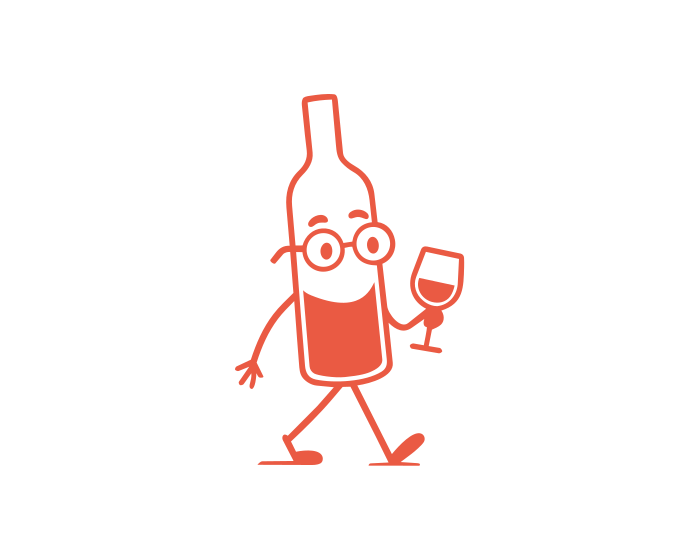
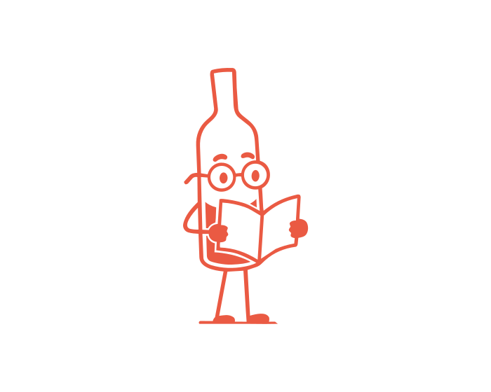
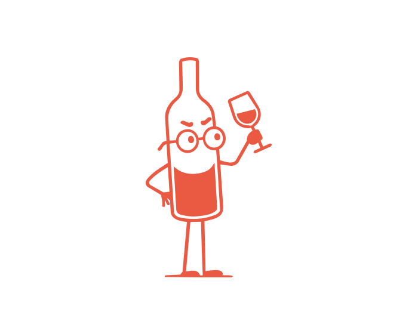
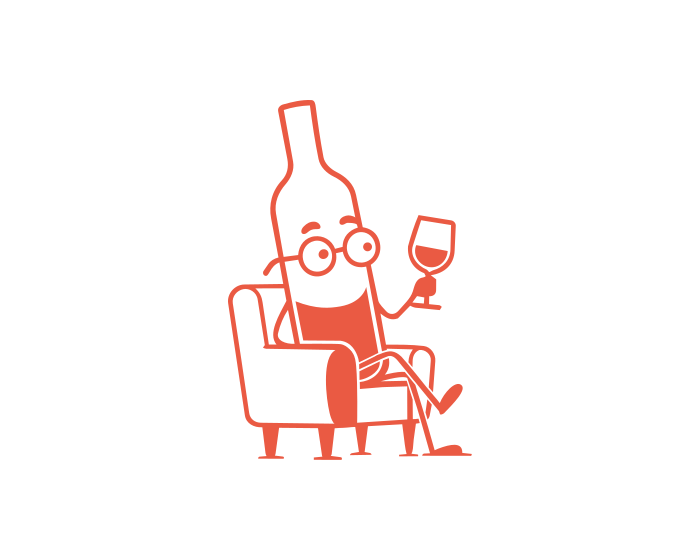
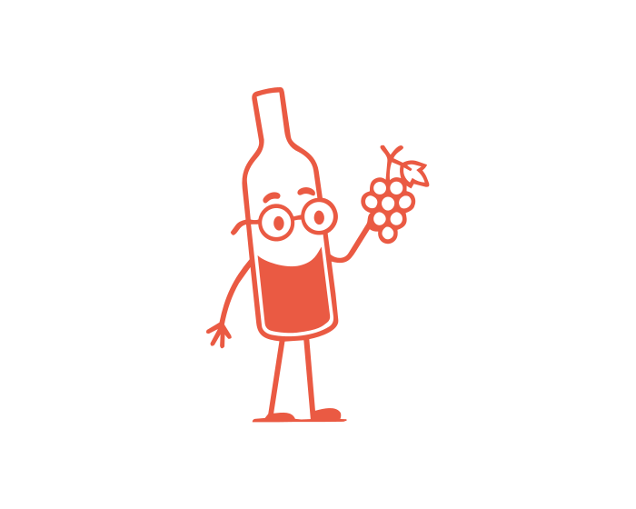
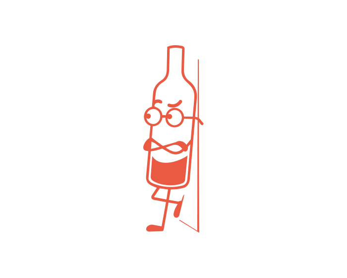

A Vinicolo assume a proposta de aproximar as pessoas do universo dos vinhos e espumantes por meio de uma curadoria cuidadosa de rótulos, orientação especializada, prática de preços justos e experiências que despertem a curiosidade e o prazer pela descoberta.
Além de venda direta ao consumidor final, a Vinicolo também presta serviços como criação de carta de vinhos para hotéis, bares e restaurantes; seleção de vinhos e espumantes para casamentos, feiras e eventos corporativos; montagem de grupos de degustação e confrarias; além de consultoria para quem foca suas viagens no enoturismo através de indicação de vinícolas, regiões produtoras etc.
A Vinicolo é comandada pelo sommelier Guilherme Macedo, com formação pela Associação Brasileira de Sommelier (ABS-RJ), diplomado pela WSET Level 2 e na 1ª turma da Escola de Enoturismo do Brasil, além de outras formações. O Guilherme está constantemente em viagens pelo Brasil, conhecendo novas vinícolas e seus produtos, além de visitar frequentemente feiras de negócios como a Prowine (SP), Wine South América (RS) e ViniBra Expo (RJ) na busca pelos melhores rótulos.
Durante quase 10 anos (2015 a 2024) éramos uma loja física e nos chamávamos Empório Serra Viva, localizada no Shopping Serra Viva, em Cordeiro-RJ.
Com a mudança para o ambiente virtual, a Vinicolo visa consolidar a missão de ofertar os melhores produtos, em todas as faixas de preço, selecionando rótulos que fujam do “lugar comum” (que não estejam fartamente distribuídos nas prateleiras das grandes redes de supermercados), com ênfase em vinícolas de pequeno e médio porte, que também acreditam que um bom vinho pode ser acessível a todos.






Auxiliar cada pessoa na sua melhor escolha, com honestidade.
Confiança conquistada com estudo e conhecimento de verdade.
Vinho como cultura do dia a dia, não só de ocasião especial.
Entusiasmo genuíno por redescobrir o prazer de experimentar.